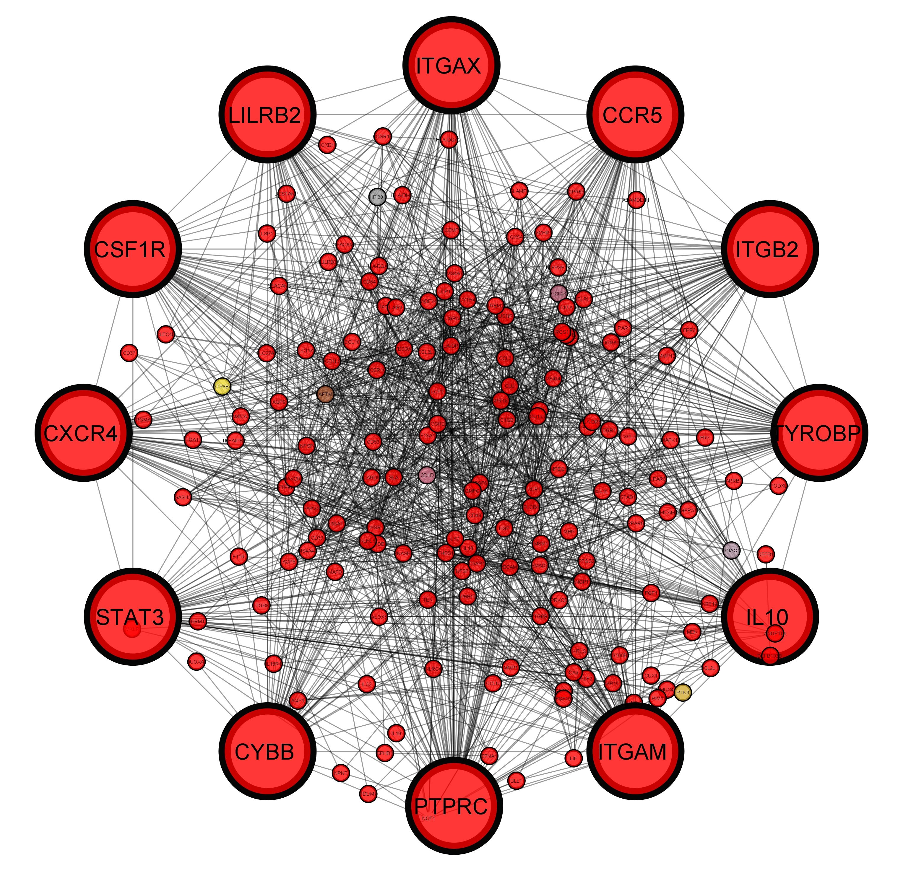
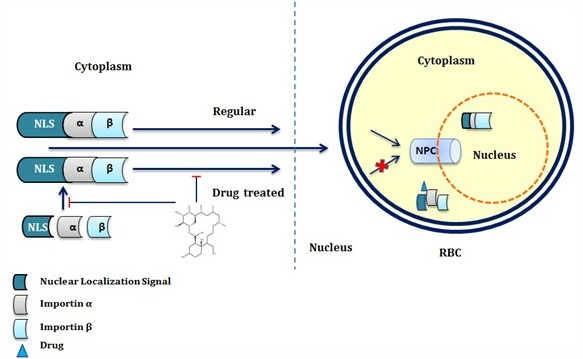
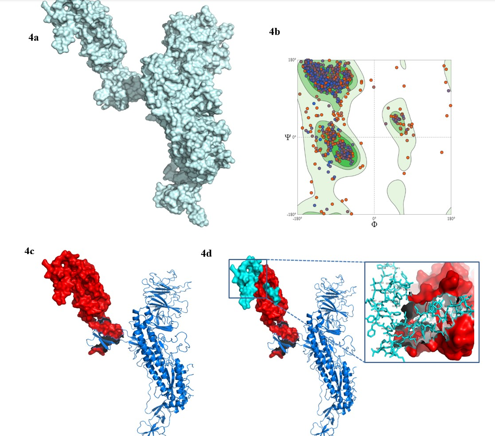
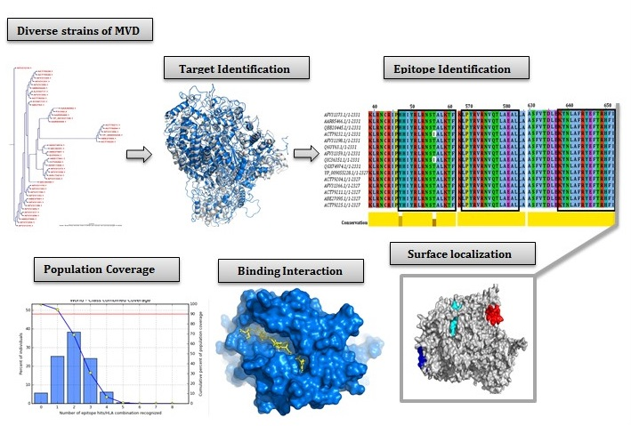

About
Howdy!I'm Arafat Rahman Oany , a Ph.D. student in Biomedical Science at Texas A&M University, College Station with a strong background in Biotechnology and valuable experience in the Pharmaceutical industry. Thank you for visiting my website!
"Meet Arafat Rahman Oany : Exploring the Background and Inspirations"
I completed my Bachelor's and Master's degrees in Biotechnology & Genetic Engineering from Mawlana Bhashani
Science & Technology University, Bangladesh where I developed a solid foundation in the principles of Molecular biology, Genetic
Engineering, and Biochemistry. Fascinated by the potential of scientific research to impact healthcare, I decided to explore the practical application
of my knowledge in the pharmaceutical industry, after graduation.
Over the past 5+ years, I worked in the pharmaceutical industry at Aristopharma Limited, Bangladesh, as a quality control personnel.
In my role, I gained valuable experience in drug development, quality control, and regulatory affairs. This experience provided me with a
comprehensive understanding of the industry's dynamics, regulatory frameworks, and the importance of ensuring drug safety and efficacy also
provided me with a
unique perspective on the translational aspects of biomedical research and deepened my understanding of the complex processes involved in bringing
innovative therapies to patients. Driven by a desire to make a broader impact on human health, I decided to pursue a Ph.D. in Biomedical Science.
Currently, I am in my first year of doctoral studies at Texas A&M University in College Station, where I am eager to delve deeper into the
exciting and ever-evolving field of Biomedical Research.
I am particularly interested in understanding drug designing and therapeutics development and identification of diagnostic tool development.
Throughout my academic and professional journey, I have had the opportunity to collaborate with multidisciplinary teams, present my research
at conferences, and contribute to scientific publications. These experiences have not only strengthened my technical skills
in experimental design, data analysis, and scientific communication but have also solidified my commitment to advancing biomedical knowledge.
Having worked in the pharmaceutical industry,I bring a unique perspective to my research.I am passionate about bridging
the gap between academia and industry, and I aim to integrate my knowledge of drug development processes and regulatory considerations into my
research endeavors. By doing so, I hope to contribute to the development of innovative solutions that address unmet medical needs.
Beyond academia and research, I am passionate about fostering collaborations and knowledge exchange. I actively participate in scientific
communities and enjoy engaging in discussions with fellow researchers, industry professionals, and healthcare stakeholders.
Thank you for visiting my website. If you would like to connect, discuss potential collaborations, or learn more about my research,
please feel free to reach out through
Phone: +1 (936) 324 8131
Email: arafatr@outlook.com or arafatr@tamu.edu
Together, let's push the boundaries of biomedical science and make a lasting impact on patient care and well-being.
Facts
Work Independently
Target Oriented
Communication Skills
Hard-working
Skills
Laboratory skills
Resume
Summary
Arafat Rahman Oany
Education
Doctoral Student in Biomedical Science
August 2023 - Present
Texas A&M University, College Station, Texas -77843
Master of Science in Biotechnology and Genetic Engineering
2014 - 2016
Mawlana Bhashani Science and Technology University, Bangladesh
Thesis:
Isolation, identification and molecular characterization of Shigella flexneri specefic bacteriophages from the environmental waters in Bangladesh
Supervised By:
Dr. Kaiser Ali Talukder (Former PI, Enteric and Food Microbiology Laboratory, icddr,b)
Result:
CGPA 3.75 out of 4.00
Bachelor of Science in Biotechnology and Genetic Engineering
2010 - 2014
Mawlana Bhashani Science and Technology University, Bangladesh
Thesis:
A Hypothetical Protein of Alteromonas macleodii AltDE1 (amad1_06475) Predicted to be a Cold-Shock Protein with RNA Chaperone Activity
Supervised By:
Dr. Shah Adil Ishtiyaq Ahmad, Assistant Professor,Mawlana Bhashani Science and Technology University, Bangladesh
Result:
CGPA 3.50 out of 4.00
Professional Experience
Senior executive, Quality Control
Mar 2021 to Aug 2022
Aristopharma Limited, Bangladesh
- Analytical method validation, Analytical Method, and SOP preparation
- Machine calibration
- Incoming raw material, and vendor evaluation
- Supervision of the water quality analysis and raw material sampling
Senior Officer, Quality Control
Jan 2019 to Mar 2021
Aristopharma Limited, Bangladesh
- Quality analysis of the raw materials
- Machine maintenance and calibration
- Water sample analysis and management
Officer, Quality Control
Nov 2016 to Jan 2019
Aristopharma Limited, Bangladesh
Research Experience
Elective Research Fellow
(National Field Experience)
Oct 2015 to Nov 2016
Enteric and Food Microbiology Laboratory, International Centre for Diarrheal Disease Research, Bangladesh (icddr, b)
Goal:
Serotype specific bacteriophage isolation, characterization and find-out possible alternative treatment of diarrhea
Research and Publications
Research Interest
Drug Designing, Cancer Biology, Bioinformatics and Molecular Biology
Research Highlights
   Publications
01. Oany AR.; Mia, M.; Pervin, T.; Alyami, S.A.; Moni, M.A 2021. Integrative Systems Biology Approaches to Identify Potential Biomarkers and Pathways of Cervical Cancer. Journal of Personalized. Medicine., 11, 363 (PMID: 33946372) (Impact Factor: 3.508) (Link)
02. Oany AR.; Pervin, T. and Moni, M.A., 2021. Pharmacoinformatics based elucidation and designing of potential inhibitors against Plasmodium falciparum to target importin α/β mediated nuclear importation. Infection, Genetics and Evolution, 88, p.104699. (PMID: 33385575)( (Impact Factor: 4.393) (Link)
03. Pervin, T. and Oany AR.;, 2021. Vaccinomics approach for scheming potential epitope based peptide vaccine by targeting L-protein of Marburg virus. ,In silico Pharmacology, 9(1), pp.1 18. (Link) 04. Oany AR.; Mia, M., Pervin, T., Junaid, M., Hosen, S.Z. and Moni, M.A., 2020. Design of novel viral attachment inhibitors of the spike glycoprotein (S) of severe acute respiratory syndrome coronavirus 2 (SARS CoV 2) through virtual screening and dynamics. ,International Journal of Antimicrobial Agents, 56(6), p.106177. (PMID: 32987103)( (Impact Factor: 15.441) (Link) 05. Oany AR.;Pervin T, Mia M, et. Al, 2017. Vaccinomics approach for designing potential peptide vaccine by targeting ,Shigella Spp. serine protease autotransporter (SPATE) subfamily protein, SigA. ,Journal of Immunology Research.14. (PMID: 25187696)( (Impact Factor: 4.493) (Link) 06. Hossain MU, Omar TM, Oany AR.; Kibria KK, Shibly AZ, Moniruzzaman M, Ali SR, Islam MM, 2018. Design of peptide based epitope vaccine and further binding site scrutiny led to groundswell in drug discovery against Lassa virus. 3 Biotech. Feb 1; 8(2):81. (PMID: 29430345)( (Impact Factor: 2.893) (Link) 07. Oany AR.;Emran AA, and Jyoti TP, 2014. Design of an epitope based peptide vaccine against spike protein of human coronavirus: an in silico approach. Drug Design, Development and Therapy. 8, 1139. (PMID: 25187696) (Impact Factor: 4.319) (Link) 08. Kibria KK, Hossain MU, Oany AR.; Ahmad SA, 2016. Novel insights on ENTH domain containing proteins in apicomplexan parasites. ,Parasitology Research. 115, 2191. (PMID: 26922178) (Impact Factor: 2.383) (Link) 09. Hossain MU, Oany AR.; Ahmad SA, Hasan MA, Khan MA, Siddikey MA, 2016. Identification of potential inhibitor and enzyme inhibitor complex on trypanothione reductase to control Chagas disease. Computational Biology and Chemistry 65, 29. (PMID: 27744094) (Impact Factor: 3.737) (Link) 10. Oany AR.;Hossain MU,siddikey AA, Islam R, Emran AA, 2016. A preliminary evaluation of cytotoxicity, antihyperglycemic and antinociceptive activity of Polygonum hydropiper L ethanolic leaf extracts. Clinical Phytoscience. 2, 1 6. (Link) 11. Oany AR.; Sharmin T, Chowdhury AS, Jyoti TP, Hasan MA, 2015 . Highly conserved regions in Ebola virus RNA dependent RNA polymerase may be act as a universal novel peptide vaccine target: a computational approach." In silico Pharmacology.:3, 1 13. (PMID:26820892) (Link) 12. Oany AR.; Jyoti TP, Ahmad SA, 2014. An in silico approach for characterization of an aminoglycoside antibiotic resistant methyltransferase protein from Pyrococcus furiosus (DSM 3638). Bioinformatics and Biology Insights 8 65 72. (PMID: 24683305) (Link) 13. Oany AR.; Ahmad SA, Kibria KK, Hossain MU, Jyoti TP, 2014. A hypothetical protein of Alteromonas macleodii AltDE1 (amad1_06475) predicted to be a cold Shock protein with RNA chaperone activity. Gene regulation and systems biology 141. (PMID:25574135) (Link) 14. Oany AR.; Ahmad SA, Hossain MU, Jyoti TP, 2015. Identification of highly conserved regions in L segment of Crimean Congo hemorrhagic fever virus and immunoinformatic prediction about potential novel vaccine. Advances and Applications in Bioinformatics and Chemistry: 8,1 10. (PMID: 25609983) (Link) 15. Oany AR.; Mamun Mia, Tehmina Pervin, Nazmul Hasan,Akinori Hirashima 2018. Identification of potential drug targets and inhibitor of the pathogenic bacteria Shigella flexneri 2a through the subtractive genomic approach In Silico Pharmacology: 6,1 11. (PMID: 30607324) (Link)Manuscript submitted/ Ready for Submission
Integrative bioinformatics approaches to identify novel molecular gene expression signatures and pathways of Cystic Fibrosis (CF) (Ready for Submission)
My Photography


{kind=link}
{kind=link}
{kind=link}
Achievements
Training and Workshop
Name: Biosafety and Biosecurity
Organized by: Biosafety division, ICDDR, B
Dated 13-15 October, 2015.
Name: Basic Biotechnology
Organized by: National Institute of Biotechnology (NIB), Bangladesh
Dated 24-28 November, 2013.
Name: Medical Waste Management in Bangladesh
Organized by: Dr. Natasha K. Griffith, Former Director, High Containment Facilities Responsible officials (RO), University of California Los Angeles, USA.
Held in: ICDDR, B.
Dated 24th October, 2015.
Name: ASM Virtual Workshop on Scientific Writing and Publishing
Organized by: Dr. Firdausi Qadri, ASM Ambassador to Bangladesh.
Held in: ICDDR, B.
Dated 4th August 2015.
Conference
Name: “Student/Postdoc Research Conference (SPRC)
Organized by: Department of Biology, Texas A&M University, College Station, Texas, USA
Held in: Cavalry Court, College Station, Texas, USA
Dated 11th February 2023
Name: Drug Discovery & Development Research in Developing Countries
Organized by: International Centre for Genetic Engineering and Biotechnology
Held in: Bangladesh University of Health Sciences, Bangladesh
Dated 03-06 October, 2015.
Name: Fourth Regional Public Health Conference
Organized by: Bangladesh University of Health Science, in collaboration with Department of International Health, University of Oslo, Norway
Held in: Bangladesh University of Health Sciences, Bangladesh
Dated 02-03 March, 2014.
Memberships
Reviewer Certificates
Peer reviewer of the few journals of Elsevier, Springer, and others.
# Web of Science™ Peer Reviewer Profile (Link)


Others
To be updated.....
---
---
---
---
--
--
--
--
--
--
Contact
To be updated......
Location:
660 Raymond Stotzer Pkwy College Station TX 77843
Email:
arafatr@outlook.com or arafatr@tamu.edu